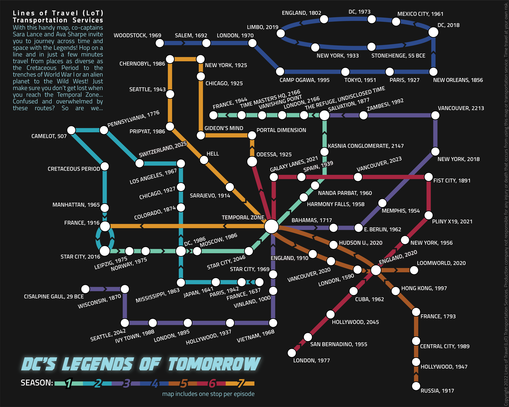

This is a transit map that was inspired by my favorite television show, Legends of Tomorrow, that I made as part of an independent study during my last semester as an undergraduate student at UW-Madison. After completing my cartography coursework, I was mostly making maps for clients and did not spend a lot of time making maps for myself. This independent study was an opportunity to make a map for myself, and to also make a map style that I have never made before: a transit map.

Unlike typical transit maps, this map is not based on any geographic space or real transit stops. Instead, it is based on the locations that the characters visit in the show Legends of Tomorrow, which is a time travel show. In each episode, the characters travel to a different location and time (some on earth and some elsewhere; some in the past and some in the future). In some episodes, the characters travel to multiple locations, so for this map I have chosen the primary location for each episode. There is one stop per episode, and one line per season.
Given that the characters occasionally travel to the same spot in multiple seasons, I connect the lines at these locations. Often, though not always, one season ends where the next season starts, so the lines then connect here. The “Temporal Zone” exists outside of space and time in this show, and is often traveled to across the seasons. Therefore, it essentially serves as the “central station”. When a location is traveled to multiple times within one season, I created a loop within the route. I added arrows onto the route to help indicate direction.
I had a lot of flexibility with regard to how to layout the lines, given that they are not based on real locations. The location of each of the lines was made based on how many connections it had to the other lines. Broadly, I tried to space out the stops based on the temporal difference between one location and the next, though these decisions were also sometimes based on space and labels.
The color of each line was chosen loosely based on the aesthetic of the season, based on my memory and the season’s posters. The data was collected from the Legends of Tomorrow Wiki and from my memory of the show. I downloaded open-source fonts similar to the aesthetic of the show to use in the map. This show ended in 2022, and the map is inclusive of all the seasons and all the episodes.